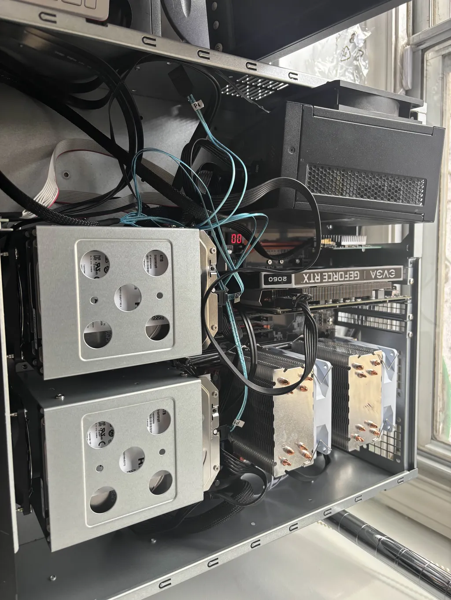

Getting pinawa to boot
pinawa runs on a cheap dual-socket X99 board from China that has no documentation at all. Here's what it took to get it booting, and whether I'd recommend one.
The build
- Unbranded dual-socket X99 motherboard (E-ATX) with a custom BIOS
- 2× Intel Xeon E5-2680 v4
- 64 GB registered ECC DDR4 at 2133 MHz
- EVGA GeForce RTX 2060
- SAS HBA card and 3× 4 TB drives in one pool
- Two daisy-chained ATX power supplies
- 3U server rack case, sitting partially open
- TrueNAS SCALE
I don't know the exact model of the board. If you search eBay for "x99 xeon motherboard dual cpu" you'll find it, or one just like it. I bought the CPUs as a combo without memory, sold my old unbuffered DDR4 at a profit, and bought 64 GB of registered ECC instead.

Debugging with no documentation
Don't bother looking for documentation on these boards. There is none. I searched QQ, Baidu and Chinese video sites and found nothing.
What finally got me through was Miyconst's post on Chinese X99 POST codes. It covers a different custom X99 board from China, but it lists the debug info and boot codes for that board's BIOS, and I cross-referenced those against the codes on my board's display until I worked out why it wouldn't boot.
Huge shoutout to Miyconst. I leaned on that post and his YouTube channel very heavily while debugging the boot codes I was getting, and I wouldn't have got this board running without them.
Memory is the hard part
- Use ECC memory if you want the system to be decent, and get registered DIMMs rather than unregistered ones.
- The memory must run at exactly the speed the CPUs and board specify. For me that was 2133 MHz.
- The board won't boot without identical registered DIMMs spread evenly between the two CPUs. You could try non-ECC unbuffered DIMMs, but you risk only one CPU being usable.
- Most of these dual-CPU boards only support dual-channel memory instead of quad-channel, so memory access isn't fast and speeds can drop hard under load. That's another reason to go registered.
With ECC set up properly, you won't see memory issues on a server.
Power, cooling and case
- Power. Dual-CPU boards need two 8-pin CPU power cables. I run two daisy-chained ATX power supplies. A server PSU with a breakout board would also work, but I couldn't find any that run on 110 V, so they're risky for a home build.
- Coolers. Make absolutely certain which generation of the socket you have. Different generations of the same socket use different cooler mounting hardware.
- Case. The board is E-ATX, so finding a case that fits is really hard. Mine used to sit on an old mining chassis I had lying around, until I bought a server rack case. That case is 3U instead of 4U, so it still has to sit partially open.
What you get, and what you lose
It's a strange mix of enterprise and consumer hardware: a custom BIOS on a jury-rigged X99 chipset. You get some nice enterprise features. My SAS HBA card interfaces with the BIOS, which makes me think the BIOS uses some Supermicro code.
You also lose some server features: no boot on LAN, no wake on LAN and no automatic power-on after a power loss. That doesn't matter much if the machine is right next to you. To manage it remotely, you could buy or build a PiKVM.
Should you build one?
Not for AI. Modern GPUs need a good CPU and fast system memory, and running several GPUs needs fast PCIe lanes. On these boards the CPU clock speeds are slow, memory is dual-channel, and most route the PCIe lanes off only one CPU, so you never use the lanes on both chips. For AI it's very uneconomical.
Where it shines is work that needs lots of cores and threads but not much compute per core, like a home server. Buy a combo with both CPUs and as much memory as you want, and you can't beat it for a strong, horizontally scaled home server. Power consumption is fairly high, but in my opinion it's worth it.